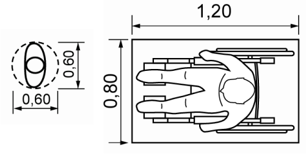
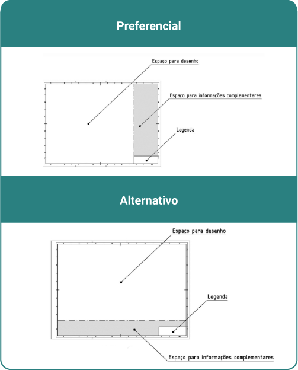
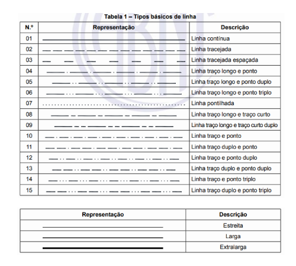

Um ambiente corporativo é um espaço físico onde atividades profissionais são realizadas e estão associadas a escritórios, nos quais é possível incluir alguns ambientes como: salas de reunião, estações de trabalho, áreas de descanso, copa e outras áreas possíveis dentro de uma empresa. O ambiente corporativo é um local que precisa ser projetado de forma segura, atendendo às normas de segurança, aliando a criatividade e a produtividade às legislações existentes.
O universo do design de interiores fica entrelaçado a um conjunto de criatividade, etapas de projeto, legislação e normas técnicas que estabelecem parâmetros e diretrizes, essenciais para a responsabilidade e a segurança da profissão. A compreensão dessas normas é essencial para os profissionais que, além de buscarem estética, harmonização e funcionalidade, buscam a segurança dos padrões da legislação brasileira.
No Brasil, a legislação e as normas técnicas trazem informações importantes na garantia da segurança dos projetos. A Associação Brasileira de Normas Técnicas (ABNT) e as normas regulamentadoras (NRs) estabelecem diretrizes que orientam desde a escolha de materiais até as dimensões de mobiliários e a disposição do leiaute dos ambientes. A integração dessas informações, junto à inovação, assegura a conformidade legal.
A representação do projeto, que segue a legislação e as normas técnicas, acompanha todas as etapas e fases do processo de design de interiores. A documentação precisa ser detalhada, incluindo plantas baixas, cortes, especificações técnicas e detalhes construtivos, além dos aspectos legais como o leiaute, a iluminação, a acústica e o mobiliário. As normas técnicas de desenhos, representação e documentação de projetos foram abordadas na unidade curricular Representar graficamente o ambiente de forma bidimensional, e você pode retomar se necessário. A expertise em interpretar normas e conseguir aplicá-las é essencial para os profissionais de design de interiores.
No trabalho de design de interiores em espaços corporativos, estar em conformidade com a legislação é algo essencial para criar um espaço seguro para quem o utiliza, garantindo uma correspondência de espaços e obtendo um respaldo sobre suas escolhas. Ao embasar suas decisões em regulamentações específicas, você, futuro designer, assegura que o ambiente atenderá aos requisitos legais e normativos, estando relacionados à acessibilidade, segurança, ergonomia, iluminação e a outros aspectos. A aderência às normas reflete no seu profissionalismo, visto que o mercado está cada vez mais consciente.
Antes de abordar a legislação, é importante mencionar que, em 13 de dezembro de 2016, foi sancionada a Lei nº 13.369, a qual reconhece e assegura o exercício da profissão de designer de interiores. Essa legislação ressalta a habilidade do profissional em conceber e realizar obras em ambientes internos. Ela garante também o reconhecimento e a valorização da profissão, garantindo a atuação com mais responsabilidade, dignidade e compromisso.
São diversas as leis que fornecem informações completas relacionadas às escolhas do designer de interiores. Para começar, veja algumas leis que citam aspectos importantes sobre acessibilidade e que devem ser considerados em um projeto.
É importante que você conheça essa Lei, que define direitos e garantias às pessoas com deficiência, tratando com igualdade o exercício de direitos e liberdade. Veja uma fala presente na Lei:
Art. 3º Para fins de aplicação desta Lei, consideram-se:
I – acessibilidade: possibilidade e condição de alcance para utilização, com segurança e autonomia, de espaços, mobiliários, equipamentos urbanos, edificações, transportes, informação e comunicação, inclusive seus sistemas e tecnologias, bem como de outros serviços e instalações abertos ao público, de uso público ou privados de uso coletivo, tanto na zona urbana como na rural, por pessoa com deficiência ou com mobilidade reduzida;
II – desenho universal: concepção de produtos, ambientes, programas e serviços a serem usados por todas as pessoas, sem necessidade de adaptação ou de projeto específico, incluindo os recursos de tecnologia assistiva;
[...] (Brasil, 2015)
Ao explorar essas normas e legislações, você poderá abordar diferentes aspectos relacionados à segurança, acessibilidade, sustentabilidade e eficiência em projetos de design de interiores. Certifique-se de adaptar as normas escolhidas de acordo com o escopo e os objetivos específicos do seu trabalho.
Essas legislações tratam da acessibilidade em espaços públicos e privados, sendo essenciais para projetos corporativos inclusivos. Elas apresentam as condições gerais de acessibilidade.
Visto, então, o cuidado necessário a ser tomado em seu projeto, veja agora as normas que trazem informações pertinentes.

Essa norma é aplicável em várias situações possíveis de serem exploradas neste estudo, apresentando diretrizes ergonômicas que visam garantir conforto, segurança e um ambiente de trabalho agradável. O uso da NR-17 pelo design de interiores garante condições adequadas para os colaboradores. O ambiente deve ser pensado de forma a atender não apenas critérios estéticos, mas também exigências legais que visam à preservação da saúde e do bem-estar dos trabalhadores, tratando desde a disposição dos móveis e a circulação até a iluminação do ambiente.
O desenvolvimento de projetos para ambientes corporativos deve ser realizado para atender não só a critérios estéticos, mas também a exigências legais, utilizando a norma como guia para a adequação ergonômica. Isso inclui a escolha do mobiliário, a disposição dos espaços, a iluminação e todos os aspectos que possam impactar a produtividade dos colaboradores.
Cabe destacar que a NR-17 não trabalha apenas a ergonomia física, mas a ergonomia organizacional e a cognitiva também.
O homem precisa estar em harmonia com o ambiente. A mais conhecida delas trata da adequação do ambiente de trabalho para o trabalhador, atendendo às características da anatomia humana (antropometria). Trata da dimensão de equipamentos e mobiliários, das posturas, do manuseio de materiais, dos movimentos repetitivos e dos distúrbios esqueléticos relacionados ao trabalho.
Trata de estrutura, política e processos do ambiente e de bem-estar coletivo. Abrange as relações entre os grupos de trabalho e a estrutura da organização. Envolve a comunicação interna e a distribuição das tarefas. Visa à criação de ambientes que proporcionem o bem-estar, a satisfação e o desempenho coletivo. A gestão do tempo, o ambiente saudável e a adaptação para as necessidades individuais são trabalhados.
Está relacionada aos processos mentais. Trabalha com a capacidade mental, a memória, o raciocínio e os processos psicológicos dos trabalhadores, desde a organização do seu trabalho, com as cargas mentais, até a organização de suas tarefas. Reduzir a carga cognitiva e promover a clareza no trabalho e nas instruções facilitam a tomada das decisões, trazendo mais conforto.
Em síntese, a aplicação integrada da ergonomia física, cognitiva e organizacional resulta em ambientes de trabalho mais eficientes, seguros e agradáveis. Ao reconhecer as necessidades do corpo, da mente e da dinâmica organizacional, é possível promover um equilíbrio harmonioso que beneficia tanto os indivíduos quanto as empresas, criando condições propícias para o sucesso e a satisfação no trabalho.
Alguns cuidados que a norma indica sobre a organização do trabalho (que tratam não só de questões físicas) e que merecem atenção no momento do projeto são:
A organização do trabalho, para efeito desta NR, deve levar em consideração:
Essas informações, extraídas da NR-17, reforçam a importância de cada detalhe no projeto, pois cada elemento contribui de forma fundamental para a qualidade do trabalho e, por consequência, para o bem-estar do colaborador.
Outros pontos abordados pela norma determinam que devem ser tomadas medidas de prevenção para diminuir situações como: posturas nocivas ao tronco, ao pescoço, à cabeça, aos membros superiores ou inferiores; movimentos bruscos; uso excessivo da força; frequência dos movimentos (para que não comprometam a segurança do trabalhador).
Como medida de prevenção, seguem alternativas como: pausas para a recuperação psicofisiológica dos trabalhadores (computadas como tempo de trabalho); alternância das atividades ou alternância de postura; alteração na forma de executar a tarefa. A norma ainda indica que, quando as duas últimas medidas não forem possíveis de abordar, é possível realizar pausas.
As dimensões dos espaços de trabalho e de circulação devem ser suficientes para que o trabalhador possa se movimentar, reduzindo o esforço e a adoção de posturas nocivas. “O conjunto do mobiliário do posto de trabalho deve apresentar regulagens em um ou mais de seus elementos que permitam adaptá-lo às características antropométricas que atendam ao conjunto dos trabalhadores envolvidos e à natureza do trabalho a ser desenvolvido” (Brasil, 2022a).
Além disso, é importante destacar que, em um espaço de trabalho, as mesas individuais devem ter um espaço adequado.
Imagine que você está trabalhando e o colega que está na frente estica as pernas e, sem querer, bate em você, ou então que você quer esticar suas pernas e não tem espaço porque há uma parede na sua frente. Com tudo o que viu até aqui, você sabe o porquê de isso acontecer? Se você pensou que a mesa tinha uma profundidade pequena, acertou!
Deve haver garantia de boa postura para os trabalhos manuais, garantindo características dimensionais que permitam bom posicionamento e movimentação, altura compatível com o tipo de atividade, distância adequada dos olhos ao campo de trabalho e altura do assento apropriada. Além disso, é preciso que a área de trabalho esteja dentro da zona de alcance manual e que o espaço “sentado” seja suficiente para as pernas, permitindo que o trabalhador se aproxime da mesa de trabalho. Por fim, sempre que o trabalhador não conseguir apoiar os pés no chão, é necessária uma adaptação (apoio de pés).
Postura correta para o trabalho
Fonte: Adaptado de Pinterest (2023)
Na imagem há uma pessoa sentada de lado, com os pés apoiados no chão, as pernas bem apoiadas na cadeira, bem como a sua lombar. A pessoa está com a coluna reta, de frente para um monitor e a parte de cima do monitor está alinhada com os olhos. O braço está apoiado no apoio de braço e com os punhos retos. Na imagem mostra mais algumas estantes, mas elas apenas complementam a cena.
Neste contexto, também deve ser considerado o uso de notebooks. Sabe-se que o notebook, hoje, proporciona uma facilidade em razão de possibilitar que as pessoas realizem seu trabalho de onde quiserem. Mas essa facilidade traz algumas consequências. Ao utilizar um notebook em casa (ou por longos períodos), por exemplo, é interessante que ele tenha um apoio, para que possa ser utilizado como tela (a parte de cima da tela deve estar alinhada com os olhos), garantindo que a altura dele fique adequada para que não se tenha inclinação do pescoço. É importante ter um teclado e um mouse separados, para dar conforto no momento do trabalho, sem inclinações indevidas dos braços e punhos.
Notebook com teclado e mouse
Fonte: Kalunga Blog (2020)
A imagem apresenta um notebook em um apoio, em cima da mesa, com teclado e mouse separados. A imagem também apresenta um vaso com uma planta e livros para compor o cenário.
Ainda, a iluminação, natural ou artificial, deve ser projetada para não haver ofuscamento, reflexos, sombras ou muitos contrastes. Essa iluminação deve ser conforme os níveis mínimos. Em locais com solicitação intelectual e atenção constante, é necessário manter um conforto térmico e acústico.
Para evitar ofuscamento, a dica é posicionar as mesas de trabalho de forma que a luz natural não reflita diretamente no monitor ou diretamente nos olhos do colaborador. Preferencialmente, é utilizada a mesa de lado para a janela, mas não se preocupe se não for possível. Sempre trabalhe com cortinas para controlar essa iluminação e adequar o espaço.
Mesa de trabalho com computador de lado para a janela
Fonte: Freepik (c2010-2024)
A imagem apresenta um notebook em cima de uma mesa, posicionado de lado para a janela. Em frente ao computador, tem uma pessoa sentada olhando e manuseando um celular.
Deve existir o controle da temperatura, da velocidade do ar e da umidade, trazendo conforto. As correntes de ar não podem ser diretas nos colaboradores.
A NR-17 também apresenta informações sobre o trabalho em teleatendimento. Embora possa não ser o foco do seu projeto, algumas observações são pertinentes para qualquer trabalho realizado em uma mesa de escritório:
3.1 [...]
c) a bancada sem material de consulta deve ter, no mínimo, profundidade de 75 cm (setenta e cinco centímetros), medidos a partir de sua borda frontal, e largura de 90 cm (noventa centímetros) que proporcionem zonas de alcance manual de, no máximo, 65 cm (sessenta e cinco centímetros) de raio em cada lado, medidas centradas nos ombros do operador em posição de trabalho;
[...]
e) o plano de trabalho deve ter bordas arredondadas;
i) nos casos em que os pés do operador não alcancem o piso, mesmo após a regulagem do assento, deve ser fornecido apoio para os pés que se adapte ao comprimento das pernas do trabalhador, permitindo o apoio das plantas dos pés, com inclinação ajustável e superfície revestida de material antiderrapante;
[...] (Brasil, 2022a)
Para as cadeiras, a norma usa as seguintes indicações:
[...]
j) os assentos devem ser dotados de:
I – apoio em 05 (cinco) pés, com rodízios cuja resistência evite deslocamentos involuntários e que não comprometam a estabilidade do assento;
II – superfícies onde ocorre contato corporal estofadas e revestidas de material que permita a perspiração;
III – base estofada com material de densidade entre 40 (quarenta) a 50 (cinquenta) kg/m3;
IV – altura da superfície superior ajustável, em relação ao piso, entre 37 cm (trinta e sete centímetros) e 50 cm (cinquenta centímetros), podendo ser adotados até três tipos de cadeiras com alturas diferentes, de forma a atender as necessidades de todos os operadores;
V – profundidade útil de 38 cm (trinta e oito centímetros) a 46 cm (quarenta e seis centímetros);
VI – borda frontal arredondada;
VII – características de pouca ou nenhuma conformação na base;
VIII - encosto ajustável em altura e em sentido anteroposterior, com forma levemente adaptada ao corpo para proteção da região lombar;
IX – largura de, no mínimo, 40 cm (quarenta centímetros) e, com relação aos encostos, de no mínimo, 30,5 cm (trinta vírgula cinquenta centímetros);
X – apoio de braços regulável em altura de 20 cm (vinte centímetros) a 25 cm (vinte e cinco centímetros) a partir do assento, sendo que seu comprimento não deve interferir no movimento de aproximação da cadeira em relação à mesa, nem nos movimentos inerentes à execução da tarefa. (Brasil, 2022a)
Cadeira para escritório
Fonte: Cavaletti Moov (c2024)
Na imagem há uma cadeira, com rodízio, mostrando que tem a possibilidade de ajuste no assento e ajuste na altura do apoio de braço. A cadeira é cinza e o assento é em tom de cinza-claro.
É possível notar, então, que a mesa precisa ter um espaço confortável, permitindo que as pessoas possam permanecer durante seu trabalho de forma tranquila. Ao indicar cadeiras, pesquise sempre pelas ergonômicas, analisando se atendem aos requisitos de apoio de lombar, altura do apoio de braço ajustável, rodízio e ajuste de altura, para ter certeza de que se adequarão a qualquer pessoa que precisar utilizar.
Além da NR-17, que aborda especificamente questões ergonômicas, existem diversas normas e legislações que podem ser relevantes para um trabalho no contexto do design de interiores. Veja, agora, uma NBR bastante conhecida: a NBR 9050.
Essa norma estabelece critérios e parâmetros técnicos a serem observados no projeto, na construção, na instalação e na adaptação de edificações, mobiliários, espaços e equipamentos urbanos, visando à acessibilidade de pessoas com deficiência ou com mobilidade reduzida.
Lembre-se de consultar a norma em busca de informações complementares sempre que precisar, conforme seus projetos e suas necessidades.
3.1.1 acessibilidade – possibilidade e condição de alcance, percepção e entendimento para utilização, com segurança e autonomia, de espaços, mobiliários, equipamentos urbanos, edificações, transportes, informação e comunicação, inclusive seus sistemas e tecnologias, bem como outros serviços e instalações abertos ao público, de uso público ou privado de uso coletivo, tanto na zona urbana como na rural, por pessoa com deficiência ou mobilidade reduzida
3.1.2 acessível – espaços, mobiliários, equipamentos urbanos, edificações, transportes, informação e comunicação, inclusive seus sistemas e tecnologias ou elemento que possa ser alcançado, acionado, utilizado e vivenciado por qualquer pessoa
[...]
3.1.7 área de aproximação – espaço sem obstáculos, destinado a garantir manobra, deslocamento e aproximação de todas as pessoas, para utilização de mobiliário ou elemento com autonomia e segurança
3.1.8 área de circulação – espaço livre de obstáculos, destinado ao uso de todas as pessoas (ABNT, 2020d)
A norma ainda cita alguns termos como “definição de espaço de descanso”, “desenho universal” e “local de reunião”, que podem ajudar você a trazer algumas definições de forma bem clara quando for trabalhar com essas informações.
Relembre medidas importantes:

Dimensões referenciais para deslocamento de pessoas em pé e dimensões do módulo de referência
Fonte: Adaptado de ABNT (2020d, p. 8-9)
São duas imagens vistas de cima. Na primeira imagem, uma pessoa sem órtese e ocupa 60 cm visto de frente ou de lado. A segunda imagem é uma pessoa sentada em uma cadeira de rodas, ocupando um espaço físico de 80 cm por 120 cm.
Medidas para a circulação da cadeira de rodas
Fonte: Adaptado de ABNT (2020d, p. 12)
São seis imagens para a ocupação da cadeira de rodas em diferentes situações. Nas duas primeiras imagens, para o giro de 90 graus da cadeira de rodas, são necessários 120 cm. A segunda coluna com as imagens apresenta que para o giro de 180 graus da cadeira de rodas é necessário um espaço de 120 a 150 cm. Na terceira coluna, com duas imagens, para o giro de 360 graus são necessários 150 cm.
É importante destacar que foram buscadas imagens de referência de maior espaço ocupado, que é de um cadeirante, mas, para ser acessível, deve-se pensar em todas as referências. Essas medidas precisam ser levadas em consideração para corredores, acesso a mesas de trabalho, acesso a recepção e a qualquer espaço que esteja no seu projeto.
Ao pensar em corredores com deslocamento, sendo apenas a cadeira de rodas, a cadeira de rodas e um pedestre ou duas cadeiras de rodas, é preciso considerar as seguintes medidas:
São duas imagens, uma vista superior e uma vista frontal. A vista superior apresenta uma pessoa em cadeira de rodas, e a de visão frontal mostra que o deslocamento de uma pessoa de cadeira de rodas ocupa 90 cm.
São duas imagens, uma vista superior e uma vista frontal. A visão superior mostra uma pessoa em cadeira de rodas e um pedestre, e a imagem frontal apresenta que, para que as duas pessoas se locomovam com tranquilidade, é necessário haver 120 a 150 cm.
São duas imagens, uma vista superior e uma vista frontal. A vista superior mostra as duas pessoas em cadeira de rodas, e a imagem, da visão frontal mostra que o deslocamento tranquilo para duas pessoas em cadeira de rodas é de 150 a 180 cm.
São duas imagens, uma vista superior e uma vista frontal, as quais mostram dimensões referenciais para a transposição de obstáculos isolados por pessoas em cadeiras de rodas. Na vista superior, a largura mínima necessária para a transposição de obstáculos isolados com extensão de no máximo 40 cm deve ser de 80 cm. A largura mínima para a transposição de obstáculos isolados com extensão acima de 40 cm deve ser de 80 cm.
Áreas de circulação em linha reta de pessoas em cadeira de rodas
Fonte: Adaptado de ABNT (2020d, p. 9-10)
O espaço de aberturas para a passagem de um cadeirante, com uma porta de abrir, precisa atender às medidas mínimas de 80 cm de abertura para a porta, e o corredor após essa passagem precisa ter pelo menos 150 cm, pensando no giro de cadeira visto anteriormente:
Deslocamento frontal
Fonte: Adaptado de ABNT (2020d, p. 70)
Uma imagem vista de cima, com duas paredes, e uma porta de abrir no meio, com um cadeirante passando pelas portas. O local onde o cadeirante está saindo tem 120 cm de largura e ele passará por uma porta de 80 cm. O espaço frontal para onde ele está se deslocando tem 150 cm de largura, e além do espaço da porta ele utilizará mais 60 cm.
Sabe-se que a circulação da cadeira precisa de alguns cuidados e é importante projetar para que todos se sintam bem no ambiente. Porém, além da circulação, também precisam estar adequados alguns móveis, distâncias e alturas. Veja, agora, o alcance manual que um cadeirante tem.
Alcance manual lateral sem deslocamento de tronco
Fonte: Adaptado de ABNT (2020d, p. 20)
São três imagens, ambas de uma pessoa em cadeira de rodas. Na primeira imagem, a pessoa está na cadeira de rodas de frente, com o braço direito elevado, mostrando as alturas de alcance, conforme o ângulo de elevação do braço, e o braço esquerdo abaixado ao lado da roda, com a altura de 40 a 55 cm do chão. Na segunda imagem, também de frente, a uma altura de 40 cm a pega é de 25 cm. A uma altura de 50 cm a pega é de 33 cm. A uma altura de 90 cm a pega é de 43 cm. E a uma altura de 115 cm a pega é de 35 cm. Na terceira imagem, com o cadeirante de frente mas com o braço esquerdo elevado, se o obstáculo ao lado esquerdo tiver 25 cm e a altura dele for de no máximo 86 cm, a pega é de até uma altura de 120 cm.
Alcance manual lateral e frontal com deslocamento de tronco
Fonte: Adaptado de ABNT (2020d, p. 21)
São três imagens, ambas de uma pessoa em cadeira de rodas. Na primeira imagem, a pessoa está na cadeira de rodas de lado, com uma pega frontal. Para alcançar um objeto de 120 cm de altura, o obstáculo frontal, na altura do abdômen do cadeirante, deve ser de 50 cm no máximo. Na segunda imagem, a pega frontal com uma altura de 110 cm, com um obstáculo na altura do abdômen do cadeirante, deve ter entre 50 e 64 cm. Já na terceira imagem com a pega lateral esquerda, com um obstáculo lateral de 25 a 60 cm no máximo, a pega fica em até 120 cm.
As figuras a seguir apresentam alcances de dimensões máximas e mínimas confortáveis para uma pessoa em pé e para uma pessoa sentada.
Alcance manual frontal – pessoa em pé; alcance manual frontal – pessoa sentada
Fonte: Adaptado de ABNT (2020d, p. 17-18)
| Legenda das figuras | |
|---|---|
| Alcance manual frontal – pessoa em pé | Alcance manual frontal – pessoa sentada |
|
A1 altura do centro da mão estendida ao longo do eixo longitudinal do corpo B1 altura do piso até o centro da mão, com o antebraço formando ângulo de 45° com o tronco C1 altura do centro da mão, com o antebraço em ângulo de 90° com o tronco D1 altura do centro da mão, com o braço estendido paralelamente ao piso E1 altura do centro da mão, com o braço estendido formando 45° com o piso = alcance máximo confortável F1 comprimento do antebraço (do centro do cotovelo ao centro da mão) G1 comprimento do braço na horizontal, do ombro ao centro da mão |
A2 altura do ombro até o assento B2 altura da cavidade posterior do joelho (popliteal) até o piso C2 altura do cotovelo até o assento D2 altura dos joelhos até o piso E2 altura do centro da mão, com o antebraço em ângulo de 90° com o tronco F2 altura do centro da mão, com o braço estendido paralelamente ao piso G2 altura do centro da mão, com o braço estendido formando 30° com o piso = alcance máximo confortável H2 altura do centro da mão, com o braço estendido formando 60° com o piso = alcance máximo eventual I2 profundidade da nádega à parte posterior do joelho J2 profundidade da nádega à parte anterior do joelho |
Legenda das figuras para alcance manual frontal
Fonte: Adaptado de ABNT (2020d)
E agora é possível comparar esse mesmo alcance por uma pessoa em cadeira de rodas. É importante destacar que, para a mesa de trabalho, a profundidade deve ser de no mínimo 50 cm e a altura do piso até o início da mesa deve ser de 73 cm.
Alcance manual frontal com superfície de trabalho – pessoa em cadeira de rodas; áreas de alcance em superfícies de trabalho, vista lateral – pessoa em cadeira de rodas
Fonte: Adaptado de ABNT (2020d, p. 19-22)
| Legenda das figuras | |
|---|---|
| Alcance manual frontal com superfície de trabalho – pessoa em cadeira de rodas | Áreas de alcance em superfícies de trabalho, vista lateral – pessoa em cadeira de rodas |
|
A3 altura do centro da mão, com o antebraço formando 90° com o tronco B3 altura do centro da mão estendida ao longo do eixo longitudinal do corpo C3 altura mínima livre entre a coxa e a parte inferior de objetos e equipamentos D3 altura mínima livre para encaixe dos pés E3 altura do piso até a parte superior da coxa F3 altura mínima livre para encaixe da cadeira de rodas sob o objeto G3 altura das superfícies de trabalho ou mesas H3 altura do centro da mão, com o braço estendido paralelo ao piso I3 altura do centro da mão, com o braço estendido formando 30° com o piso = alcance máximo confortável J3 altura do centro da mão, com o braço estendido formando 60° com o piso = alcance máximo eventual L3 comprimento do braço na horizontal, do ombro ao centro da mão M3 comprimento do antebraço (do centro do cotovelo ao centro da mão) N3 profundidade da superfície de trabalho necessária para aproximação total O3 profundidade da nádega à parte superior do joelho P3 profundidade mínima necessária para encaixe dos pés |
Vista lateral de uma pessoa em cadeira de rodas, com as pernas acomodadas embaixo de uma mesa de trabalho Profundidade mínima da mesa: 50 cm Altura mínima do piso até o início da mesa: 73 cm |
Legenda das figuras para alcance manual frontal com superfície de trabalho – pessoa em cadeira de rodas; áreas de alcance em superfícies de trabalho, vista lateral – pessoa em cadeira de rodas
Fonte: Adaptado de ABNT (2020d)
São alturas e profundidades que precisam ser analisadas, tendo em vista o alcance de prateleiras, estantes e demais móveis que estiverem disponíveis para o uso nesse espaço corporativo.
Outro ponto que a norma aborda são os assentos para pessoas obesas, que precisam ter:
Veja a imagem da cadeira descrita acima, com as medidas:
Dimensões para assentos de pessoas obesas
Fonte: ABNT (2020d, p. 27)
Embora o designer não seja o responsável pelos espaços internos, é importante destacar que um banheiro para cadeirante precisa de alguns cuidados:
Vista superior da área de transferência e da área de manobra
Fonte: Adaptado de ABNT (2020d, p. 86)
São duas imagens vistas de cima. A primeira mostra um banheiro com a porta de abrir, para fora do ambiente. Mostra uma pia na lateral esquerda, barras de apoio na parede à esquerda e um vaso sanitário. No piso são representações de área de transferência do cadeirante para o sanitário. Na segunda imagem é o mesmo espaço, mostrando um cadeirante e o espaço do raio de 150 cm do giro da cadeira.
Áreas de transferência e manobra para uso da bacia sanitária
Fonte: Adaptado de ABNT (2020d, p. 86)
São duas imagens vistas de cima. A primeira o mesmo banheiro descrito acima, mas com a área de uso sombreada em cinza, do ambiente na frente da pia. A segunda imagem mostra o cadeirante próximo à pia, com a medida das profundidades de 30 cm da cadeira até o pé, 12 cm da cadeira até o meio da perna e da cadeira até a torneira com 50 cm. Na ordem das profundidades para o cadeirante, 30 cm do piso até a pia, 65 cm do piso até o apoio de braço e de 78 a 80 cm a altura final do apoio.
Medidas mínimas de um sanitário acessível em caso de reforma – vista superior
Fonte: ABNT (2020d, p. 87)
Imagem superior de um sanitário que de largura total tem 150 cm, da porta até parte do vaso sanitário tem 120 cm, com linhas tracejadas mostrando o espaço do giro da cadeira.
Para o acesso ao vaso sanitário, são necessárias barras de apoio para o uso com autonomia de pessoas com deficiência ou mobilidade reduzida. Essas barras devem suportar um peso de mínimo de 150 kg, sem apresentar deformações, e estar fixadas de forma firme. Além disso, deve haver uma distância mínima de 40 mm entre a base de suporte (parede) até a face interna da barra. Se a barra for em metal, precisa estar de acordo com a ABNT NBR 10283:2018, sendo resistente à corrosão, e ter material aderente conforme a ABNT NBR 11003:2023.
Áreas de transferência e manobra para uso da bacia sanitária
Fonte: Adaptado de ABNT (2020d, p. 89)
São quatro imagens. As duas primeiras imagens da esquerda mostram uma vista superior com a barra a 40 mm de distância da parede até a parte interna da barra e com 110 mm de máxima. Na vista frontal, mostra que a pega da barra tem entre 30 a 45 mm de diâmetro. Nas imagens laterais, a imagem da vista superior traz as mesmas medidas e na imagem superior mostra que a barra é fixa na parte de baixo e que essa barra que fica fixa tem no mínimo 40 mm de distância da barra de pega.
Essas barras devem ser fixas, em formato de U ou L, ou articuladas. As bacias sanitárias e os assentos acessíveis não podem ter a abertura frontal.
Áreas de transferência e manobra para uso da bacia sanitária
Fonte: Adaptado de ABNT (2020d, p. 89)
São quatro imagens vistas de cima. Todas apresentam um banheiro com um cadeirante. Na primeira o cadeirante está no lado direito do vaso sanitário. Na segunda o cadeirante está posicionado lateralmente para o vaso sanitário. O vaso está no lado esquerdo do cadeirante. Na terceira imagem, o cadeirante está de forma diagonal, com a frente da cadeira para a parede, com o vaso sanitário na lateral direita do cadeirante. Na quarta imagem seguindo em diagonal, o vaso sanitário está na lateral esquerda.
As bacias precisam respeitar algumas alturas, sendo estas medidas com o piso acabado. Essas informações são de bacias para adultos.
Altura da bacia
Fonte: Adaptado de ABNT (2020d, p. 90)
São duas imagens. A primeira mostra a vista frontal com a borda com cantos arredondados, com no máximo 0,05 m de largura. Na segunda imagem com a vista lateral esquerda, a altura da bacia sem o assento é de 43 cm a 45 cm. E a altura da bacia com o assento é de no máximo 46 cm.
Para as bacias sanitárias com parede lateral, as barras de apoio ficam ao fundo e a 90° na parede lateral. As figuras apresentam o uso da barra fixa no fundo e duas retas fixadas a 90° na lateral, quando a bacia está próxima à parede. A legenda se aplica para as imagens com o desenho dos sanitários.
| Legenda | ||
|---|---|---|
| Cotas | Adulto (m) | Infantil (m) |
| A | 0,75 | 0,60 |
| A1 (máximo) | 0,89 | 0,72 |
| B | 0,40 | 0,25 |
| C | 0,46 | 0,36 |
| D | 0,30 | 0,15 |
Legenda das medidas
Fonte: Adaptado de ABNT (2020d)
Bacia convencional com barras de apoio ao fundo e a 90° na parede lateral
Fonte: Adaptado de ABNT (2020d, p. 91-92)
São quatro imagens em diferentes vistas de uma bacia sanitária e com barras de apoio. A primeira imagem mostra que a altura da bacia com assento tem a medida de C, e a barra de apoio tem 11 cm de distância da parede. Na segunda imagem, com a vista frontal, considerando que a barra de apoio tem no mínimo 80 cm de largura, a altura da barra tem a distância de A, e do centro do vaso até o final da barra tem a medida de D. Na terceira imagem a vista lateral esquerda, com a barra na parede com a distância dela e da parede de 11 cm. Barra na horizontal com 80 cm de distância. A barra vertical está posicionada a 30 cm de distância do vaso até o centro dela, tem 70 cm de altura e está a 10 cm de altura da barra horizontal. A barra horizontal está posicionada a uma distância de 50 cm do vaso até o final dela. A altura da barra horizontal está com a medida A. A quarta imagem, em vista superior, mostra que o centro do vaso e a barra estão a uma distância de B.
Essas mesmas medidas valem para quando houver um vaso suspenso, com paredes ao fundo e a 90° da parede lateral. Quando for uma bacia com caixa acoplada com barras de apoio ao fundo e a 90° na parede lateral, considere:
Bacia convencional com barras de apoio ao fundo e a 90° na parede lateral
Fonte: Adaptado de ABNT (2020d, p. 93-94)
São quatro imagens em diferentes vistas de uma bacia sanitária com caixa acoplada e com barras de apoio. A primeira imagem mostra que a altura da bacia com assento tem a medida de C, e a barra de apoio está a 4 cm de distância da caixa. Na segunda imagem, com a vista frontal, a barra de apoio tem no mínimo 80 cm de largura, e a altura da barra tem a distância de A1 e do centro do vaso até o final da barra tem a medida de D. Na terceira imagem, a vista lateral esquerda, a barra está na parede com a distância dela e da parede de 11 cm. A barra na horizontal com 80 cm de distância. A barra vertical está posicionada a 30 cm de distância do vaso até o centro dela e tem 70 cm de altura, e está a 10 cm de altura da barra horizontal. A barra horizontal está posicionada a uma distância de 50 cm do vaso até o final dela. A altura da barra horizontal está com a medida A. A quarta imagem, em vista superior, mostra que o centro do vaso e a barra estão a uma distância de B.
Quando utilizada uma bacia convencional ou suspensa, com barra de apoio e uma barra de apoio lateral fixa:
Sem parede lateral – bacia convencional ou suspensa com barras de apoio reta e lateral fixa
Fonte: Adaptado de ABNT (2020d, p. 94-95)
São 4 imagens em diferentes vistas de uma bacia sanitária e com barras de apoio. A primeira imagem mostra que a altura da bacia com assento tem a medida de C. Na segunda imagem, com a vista frontal, a barra de apoio tem no mínimo 80 cm de largura, a altura da barra tem a distância de A e do centro do vaso até o final da barra tem a medida de D. Na terceira imagem, a vista lateral esquerda, a ponta do vaso sanitário e o final da barra têm uma distância de 20 cm no mínimo. A altura do piso até a parte de cima da barra tem a altura de A. A quarta imagem, em vista superior, mostra que o centro do vaso e a barra estão a uma distância de B.
Se for uma bacia com a caixa acoplada com barras na lateral fixa:
Sem parede lateral – bacia convencional ou suspensa com barras de apoio reta e lateral fixa
Fonte: Adaptado de ABNT (2020d, p. 95-96)
São quatro imagens em diferentes vistas de uma bacia sanitária com caixa acoplada e com barras de apoio. A primeira imagem mostra que a altura da bacia com assento tem a medida de C, e a barra de apoio está a 4 cm de distância da caixa. Na segunda imagem, com a vista frontal, a barra de apoio tem no mínimo 80 cm de largura, a altura da barra tem a distância de A1 e do centro do vaso até o final da barra tem a medida de D. Na terceira imagem, a vista lateral esquerda, com a barra na parede com a distância dela e da parede de 11 cm, a barra na horizontal com 80 cm de distância. A barra vertical está posicionada a 30 cm de distância do vaso até o centro dela e tem 70 cm de altura, e está a 10 cm de altura da barra horizontal. A barra horizontal está posicionada a uma distância de 50 cm do vaso até o final dela. A altura da barra horizontal está com a medida A. A quarta imagem, em vista superior, mostra que o centro do vaso e a barra estão a uma distância de B.
Se for uma bacia com a caixa acoplada com as duas barras laterais, sendo uma articulada e uma fixa:
Sem parede lateral – bacia convencional ou suspensa com barras de apoio reta e lateral fixa
Fonte: Adaptado de ABNT (2020d, p. 96-97)
São quatro imagens em diferentes vistas de uma bacia sanitária e com barras de apoio. A primeira imagem mostra do piso até a parte de cima da barra de apoio articulada, que é a medida de A, e que a distância mínima da ponta do vaso até o final da curvatura da barra é de no mínimo 10 cm. A vista frontal mostra que a altura da bacia com assento é de C. Na vista lateral esquerda, mostra que da altura do piso até a parte de cima da barra de apoio fixa é medida de A e que a distância do ponto do vaso até o final da curvatura da barra é de no mínimo 20 cm. Na vista superior mostra que a distância do centro do vaso até a barra (seja fixa, seja articulada) é de B.
Quando a válvula da descarga for na parede, ela deve estar a uma altura de no máximo 100 cm do piso.
Sobre a instalação de lavatórios e barras de apoio, a norma prevê que é preciso ter o mínimo de esforço previsto na ABNT NBR 16731-1:2021.
Áreas de aproximação frontal – lavatório
Fonte: Adaptado de ABNT (2020d, p. 98)
São duas imagens vistas de cima de uma pia. A primeira mostra uma pessoa em frente a essa pia, com a largura de 60 cm. A segunda imagem mostra uma cadeira de rodas posicionada em frente à pia. A área de aproximação da cadeira é de 30 cm (de baixo da pia até a parte frontal da pia). E a cadeira ao todo, posicionada 30 cm em baixo da pia, ocupa um espaço total de 120 cm.
Barra de apoio no lavatório – vista superior
Fonte: Adaptado de ABNT (2020d, p. 99-100)
São seis imagens, sendo a primeira com as barras horizontais ao lado da pia. O final da barra até o início da pia é de no máximo 20 cm e a distância da barra lateral para a pia é de no mínimo 4 cm. Nas barras verticais, a distância do centro da torneira até os apoios é de no máximo 50 cm. Nas barras horizontais e verticais, a distância do centro da torneira até a barra de apoio é de 50 cm. A distância da pia até a barra lateral direita é de no mínimo 4 cm, a profundidade da torneira até o final da pia é de 50 cm, e o final da barra de apoio até a borda da pia é de no máximo 20 cm. No lavatório de canto com barras verticais, a distância do canto da parede até as barras de apoio são de no máximo 50 cm. A pia é redonda e a distância do comando da torneira até o final da pia é de no máximo 50 cm. No lavatório de semiencaixe com barras verticais, o centro da pia até as barras seguem de 50 cm, a profundidade da torneira segue de no máximo 50 cm e a distância da barra de apoio até a borda da pia é de no máximo 20 cm. No lavatório de semiencaixe com barras laterais, o centro da pia até as barras segue de 50 cm, a profundidade da torneira segue de no máximo 50 cm e a distância da barra de apoio até a borda da pia é de no máximo 20 cm.
Barra de apoio no lavatório – vista lateral
Fonte: Adaptado de ABNT (2020d, p. 100)
Duas imagens em vista lateral, a primeira mostrando a barra horizontal com a borda da pia até o apoio com no máximo 20 cm e a parte superior de apoio até o piso varia de 78 a 80 cm. Na vista lateral da barra vertical, a altura do piso até o início da barra é de 90 cm e a barra tem no mínimo 40 cm. Entre a barra e a saboneteira há 4 cm no mínimo de distância. Da barra até a borda da pia até a barra de apoio tem no máximo 20 cm.
As medidas de boxes, sanitários coletivos, mictórios, entre outros estão disponíveis na norma. Os acessórios para sanitários estão dentro da faixa de alcance que a próxima imagem apresenta. A faixa de alcance inicia a 80 cm do piso e vai até 120 cm do piso. Itens como porta-objetos, cabides, espelho, saboneteira e toalheiro devem ficar dentro dessa faixa.
A instalação do espelho deve seguir as recomendações de alturas das imagens. Quando estiver atrás de uma pia, a parte mais baixa do espelho deve ficar a uma altura máxima de 90 cm do piso; e do piso até o início do espelho a altura máxima deve ser de 180 cm. Quando a colocação for livre, deve respeitar que do piso até o início do espelho tenha 50 cm de altura e do piso até o final do espelho tenha no mínimo 180 cm.
Faixa de alcance de acessórios junto ao lavatório e altura da instalação do espelho
Fonte: Adaptado de ABNT (2020d, p. 104-105)
São três imagens, sendo a primeira uma vista frontal e as duas seguintes uma vista lateral. Na vista frontal, pode-se ver, em ordem, os itens: porta-objetos, cabide, barra de apoio, espelho, saboneteira e toalheiro. Em destaque mostra a área de alcance, onde os objetos estão posicionados dentro das medidas: 80 cm até o piso. A segunda imagem com a vista lateral mostra a pia, os apoios e o espelho vistos de lado. O espelho está posicionado a uma altura inferior máxima de 90 cm e com a altura mínima de 180 cm. Na terceira imagem apenas com o espaço visto de lado, a altura do espelho a partir do piso com 50 cm e a altura mínima do piso até a parte de cima com 180 cm.
Demais informações, como alturas das papeleiras embutidas e de sobrepor, estão disponíveis na norma.
Aqui foram trabalhadas algumas medidas básicas e de referência para o seu projeto. Situações pontuais ou que não foram abordadas devem ser consultadas na norma. Lembre-se sempre de que um projeto baseado em medidas e informações que estão disponíveis em normas é a garantia de ter um projeto ético e legal.
Uma boa iluminação proporciona uma boa visualização do ambiente, permitindo que se mantenham a segurança e a eficiência nas atividades do dia a dia. “Desta maneira a iluminação deve satisfazer os aspectos quantitativos e qualitativos exigidos pelo ambiente” (ABNT, 2013, p. 2).
A norma em questão ainda cita que uma iluminação inadequada causa ofuscamento, fadiga visual ou até baixo estímulo, tornando o espaço tedioso. Para isso, ela indica como analisar o ambiente de trabalho e os demais locais.
Essa descrição está presente no item 4.3.3, sobre a iluminância no entorno imediato, que deve estar relacionada com área da tarefa, área de trabalho, indicando que a distribuição da iluminação deve ser balanceada. Áreas onde há mudanças drásticas de iluminação geram desconforto e estresse. Porém, a iluminação no entorno deve ser mais baixa do que a da área da tarefa e deve seguir os valores da tabela:
|
Iluminância da tarefa lux |
Iluminância do entorno imediato lux |
|---|---|
| ≥ 750 | 500 |
| 500 | 300 |
| 300 | 200 |
| ≤ 200 | Mesma iluminância da área de tarefa |
Iluminância da tarefa e do entorno imediato
Fonte: Adaptado de ABNT (2013, p. 5)
O índice de reprodução de cor (Ra) também é conhecido como IRC no Brasil e como CRI Internacionalmente. Não se recomenda a utilização de lâmpadas com Ra inferior a 80 em interiores onde as pessoas trabalham ou permanecem por longos períodos. Essa informação está presente na caixa do produto ou no site do fabricante:
Caixa de lâmpada e informações no site
Fonte: Adaptado de Stella (c2019)
Imagem de uma caixa de lâmpada com algumas informações importantes, sendo a informação em destaque o IRC maior ou igual a 80. Ainda, informações sobre as lâmpadas retiradas do site da Stella, sendo a mais importante a IRC maior que 90.
A norma ainda indica que a luz natural é significativa, mas é importante que essa luz possa ser controlada com persianas ou brises para que não interfira no trabalho. Ela não deve ficar diretamente nos olhos dos trabalhadores ou na superfície de trabalho, causando ofuscamento.
São dadas diretrizes específicas para a iluminação de estações de trabalho equipadas com monitores. As recomendações visam garantir uma iluminação adequada nas estações de trabalho para a leitura de telas e textos, a escrita e o uso do teclado. O tipo de iluminação variará de acordo com a natureza da atividade, e aqui há apenas um dos exemplos apresentados em normas.
É importante destacar que os reflexos causam desconforto, por isso o designer precisa determinar zonas que estejam melhores para o projeto ou que possam ser controladas por cortinas, por exemplo. Além disso, também é possível suplementar para garantir a iluminância necessária no local de trabalho, com o equilíbrio na distribuição no ambiente.
Veja informações retiradas da norma.
| Iluminação de estações de trabalho com monitores VDT | ||||
|---|---|---|---|---|
| Iluminância na superfície | Índice de limite de ofuscamento, aplicado conforme a coluna 1 | Índice de reprodução de cor mínima para a situação da coluna 1 | Recomendações para exceções e aplicações especiais | |
| Tipo de ambiente, tarefa ou atividade | EM LUX |
UGRL | Ra | Observações |
| 22. Escritórios | ||||
| Arquivamento, cópia, circulação etc. | 300 | 19 | 80 | |
| Escrever, teclar, ler, processar dados | 500 | 19 | 80 | Para trabalho com VDT, ver 4.10. |
| Desenho técnico | 750 | 16 | 80 | |
| Estações de projeto assistido por computador | 500 | 19 | 80 | Para trabalho com VDT, ver 4.10. |
| Salas de reunião e conferência | 500 | 19 | 80 | Recomenda-se que a iluminação seja controlável. |
| Recepção | 300 | 22 | 80 | |
| Arquivos | 200 | 25 | 80 | |
Planejamento de ambientes (áreas), tarefas e atividades com a especificação de iluminância, limitação de ofuscamento e qualidade da cor
Fonte: Adaptado de ABNT (2013, p. 19)
A medição da iminência deve ser realizada em pontos específicos dentro das áreas, garantindo que as leituras não sejam inferiores aos valores calculados de cada ponto específico.
Agora serão analisados a área de trabalho e o entorno. A área da tarefa é a área principal do trabalho. Já o entorno imediato é definido como a área ao redor da área da tarefa, seguindo ainda dentro campo de visão do trabalhador.
Área da tarefa e do entorno imediato
Fonte: ABNT (2013, p. 26)
Na lateral esquerda, há dois quadrados. O quadrado maior, em amarelo, indica a área de trabalho e o quadrado menor, ainda em tom de amarelo, um entorno imediato. Na imagem à direita, há um retângulo maior, denominado como o entorno imediato. Há outro retângulo menor, em outro tom de amarelo, indicando a área de trabalho. E há mais três retângulos em um tom de amarelo mais claro, denominando uma possível área individual. Na área de trabalho e nas áreas de possível tarefa individual, o valor é maior ou igual a 0,7. Na área de trabalho, o valor é maior ou igual a 0,6. No entorno imediato, o valor é maior ou igual a 0,5.
A norma indica também que, ao definir áreas de tarefa, é importante prestar atenção em superfícies verticais, como quadros ou outros elementos que possam estar inclinados.
É necessário avaliar o espaço de trabalho e medir o lugar da tarefa, incluindo a mesa e o espaço que o funcionário ocupará. Na imagem, é possível ver a área/superfície de trabalho (em amarelo) e o espaço do funcionário (em rosa).
Área da tarefa
Fonte: ABNT (2013, p. 26)
Na imagem há uma mesa e uma cadeira em um ambiente. Embaixo da cadeira, marcando o espaço de uso de um trabalhador, está um retângulo rosa. Um retângulo amarelo marca o espaço de área de trabalho, que fica em cima da mesa e em cima da cadeira. Em cinza, marca o espaço de trabalho em cima da mesa.
Veja um exemplo de como é possível definir áreas pelo projeto de iluminação, com áreas conhecidas:
Locais de trabalho
Fonte: ABNT (2013, p. 27)
Há uma imagem 3D com duas mesas de trabalho. Em amarelo mais claro está a definição do espaço de trabalho e em amarelo mais escuro está o entorno dessa área.
Além do ofuscamento por superfícies muito brilhantes, há também o ofuscamento refletido, que é causado pela reflexão da luz em superfícies que sejam brilhantes, o qual também deve ser evitado. Esses ofuscamentos podem prejudicar muito o trabalho, portanto é necessário tomar cuidado ao escolher uma fonte de luz, pois ela deve ser adequada para que não cause nenhum ofuscamento na tela ou na mesa de trabalho.
Ao longo de um dia de estudos, você já sentiu que se movimentou na cadeira para conseguir ler a tela do seu computador? Ou já sentiu que foi fechando os olhos para conseguir estudar? Essas são situações que ocorrem quando há alguma fonte de luz diretamente em seus olhos ou na tela do seu computador.
Essa norma define as dimensões básicas para o mobiliário com as características físicas e dimensionais, garantindo a ergonomia e a funcionalidade dos itens utilizados nos ambientes internos. Toda cadeira fabricada deverá ser baseada nesses requisitos da norma, que aborda estabilidade, resistência e durabilidade.
A norma ainda indica que, para um posto de trabalho que envolva atividade com equipamentos como teclado, mouse e vídeos, é recomendado que a cadeira tenha ajustes no assento, apoio na lombar, inclinação do encosto, profundidade útil no assento e inclinação do assento.
É importante destacar também que a cadeira dever ter apoio de braços regulável e rodízio, a fim de que o trabalhador possa ficar corretamente posicionado de forma confortável, evitando fadiga ao longo de sua jornada. Lembre-se da imagem da cadeira ergonômica, com todos os ajustes de alturas.
Os principais itens dessa norma incluem:
Essa norma traz alguns requisitos para a garantia de segurança e conforto aos trabalhadores, em locais onde desenvolvam atividades laborais. Ela destaca que os pisos não podem apresentar saliências nem depressões que prejudiquem a circulação. Destaca também que em escadas, rampas, corredores e passagens dos locais de trabalho, onde houver algum risco de escorregamento, devem ser utilizados sistemas antiderrapantes.
Estabelece critérios para garantir boas condições sanitárias e de conforto nos locais de trabalho, incluindo aspectos como ventilação, iluminação, mobiliário, entre outros. Nessa NR, é possível destacar dois itens, que são as instalações e os componentes sanitários, e, dependendo dos ambientes para o seu projeto, também os locais para refeições.
Dentre os itens que a NR traz, alguns são importantes de serem destacados para o seu estudo, por exemplo: paredes e piso revestidos de material impermeável e lavável, existência de recipientes para descarte de papéis usados, ventilação para o exterior ou por meio de algum exaustor.
Já para os locais de refeição, os espaços corporativos devem oferecer locais com conforto e higiene para os intervalos durante a jornada de trabalho (quando necessário), tendo assentos e mesas, balcões ou similares para os usuários. Deve haver local para conservação e aquecimento da refeição e para lavagem dos utensílios com água. Deve, ainda, ser fora da área de trabalho e de espaços para circulação.
Essa norma estabelece alguns critérios sobre a durabilidade dos materiais escolhidos e o desempenho acústico para sistemas de piso. Ela fala, ainda, sobre o isolamento adequado entre áreas comuns e privadas e as condições de desempenho acústico no interior da edificação quanto a ruídos de impacto.
Essa norma estabelece diretrizes para a gestão de reformas em edificações, garantindo a segurança e a qualidade dos projetos realizados. Por exemplo: escolher pisos que sejam resistentes a impactos (gerando menos manutenção) e pisos com coeficiente de atrito que dê segurança aos usuários na circulação e que diminuam a propagação do som emitido por caminhar, incluindo casos como o uso de salto alto.
Embora a norma atualizada diminua a responsabilidade do síndico, é importante que você a conheça, pois trata da comunicação com o síndico do local onde será realizada a obra.
Este é um tópico abrangente e necessário para o seu conhecimento. Drywall é um material bastante utilizado em outros países e vem sendo utilizado para divisórias internas. Caso opte por trabalhar com ele, é interessante conhecer as regras para estar dentro das conformidades. A ABNT criou algumas regras para o sistema construtivo, assegurando uma padronização que garante a fabricação e a instalação com eficiência e desempenho.
Relembre agora algumas normas para representação de projetos.
Essa norma trata dos requisitos para a apresentação de projeto, abordando as características das folhas de desenho. São indicações sobre os tamanhos das folhas, a definição dos locais para informações complementares e legendas, os padrões de dobra e as escalas para os desenhos. Veja algumas dessas indicações.
Na arquitetura, por exemplo, utiliza-se muito o trabalho em folha A0 (a maior delas) e, com base nesse formato, há os demais.
| Designação | Dimensões em mm |
|---|---|
| A0 | 841 x 1189 |
| A1 | 594 x 841 |
| A2 | 420 x 594 |
| A3 | 297 x 420 |
| A4 | 210 x 297 |
Dimensões das folhas
Fonte: Adaptado de ABNT(2020a, p. 3)
Quanto às margens e ao quadro, todas as folhas precisam seguir com a margem esquerda com 20 mm de largura para permitir que a folha seja perfurada e arquivada. As demais margens são de 10 mm de largura, conforme a imagem.
Margens
Fonte: Adaptado de ABNT (2020a)
Na imagem há o canto lateral esquerdo de uma folha, mostrando as medidas das margens, sendo a lateral esquerda de 20 mm e a superior de 10 mm.
O espaço da folha é dividido em três elementos: espaço para legenda, espaço para desenho e espaço para informações complementares:

Legenda e informações complementares
Fonte: Adaptado de ABNT (2020a, p. 10)
São duas imagens de uma folha na horizontal. Na primeira imagem, o canto lateral direito (1/4 da folha) está sombreado, indicando que é o espaço para informações complementares. Embaixo há a legenda e o restante da folha para desenho. Na segunda imagem, a margem de baixo sombreada com a marcação para o espaço de informações complementares, um espaço para a legenda e o restante da folha para desenho.
O espaço para o desenho é onde você deve apresentar um ou mais desenhos, sendo o desenho principal representado acima e à esquerda. Na legenda, devem constar as subdivisões sobre informações com os dados de escala, data, cliente, prancha e demais itens importantes já vistos em outras unidades curriculares. No espaço complementar, devem constar explicações, instruções, referências, listas e desenhos esquemáticos.
Essa norma aborda requisitos para a representação de linhas e escrita em desenhos técnicos. Ela estabelece diretrizes para a escolha dos tipos de linhas e espessuras. Além disso, a norma define critérios para a representação de textos, legendas e elementos escritos em desenhos técnicos. O objetivo principal é garantir a uniformidade e a consistência na comunicação visual de informações técnicas, facilitando a interpretação por parte dos profissionais envolvidos na leitura e na execução dos desenhos técnicos.
A imagem a seguir mostra que as linhas são configuradas por um tipo básico e um subtipo. O tipo básico indica se é contínua, pontilhada, tracejada (entre outros), e o subtipo refere-se à espessura, podendo ser estreita, larga ou extralarga.

Tipos básicos de linha
Fonte: Adaptado de ABNT (2020c)
A imagem demonstra 15 tipos de linhas, trazendo variações em linha contínua, linha tracejada, linha tracejada espaçada, linha traço longo e ponto, linha traço longo e ponto duplo, linha traço longo e ponto triplo, linha pontilhada, linha traço longo e traço curto, linha traço longo e traço curto duplo, linha traço e ponto, linha traço duplo e ponto, linha traço e ponto duplo, linha traço duplo e ponto duplo, linha traço e ponto triplo, linha traço duplo e ponto triplo. Há também uma imagem que demonstra uma tabela representando três espessuras das linhas, estreita, larga e extralarga.
Essa norma trata de projeto arquitetônico, mas se concentra nos elementos gráficos do trabalho: o tipo e o formato do papel, as escalas do desenho arquitetônico, os tipos das letras e dos números, os tipos de linhas, as formas de indicação para dobrar a folha.
Dobra da folha
Fonte: ABNT (1994)
Na imagem, uma folha A4, sendo dobrada, mostrando que o espaço da legenda até a borda é de 185 mm, o espaço central da dobra é de 105 mm e o espaço inicial é de 130 mm.
A norma também recomenda que as representações das técnicas de desenho a mão livre sejam feitas nas etapas de croqui e do estudo preliminar e que o anteprojeto e o projeto executivo sejam realizados de forma assistida. A norma traz também as etapas dos projetos. Trata da documentação técnica para o projeto, favorecendo clareza, consistência e comunicação entre os profissionais. A norma ainda mostra as linhas de representação, os tipos de letras e números (manual ou por instrumento), as escalas, as chamadas, as cotas de nível e a marcação dos cortes.
Outro ponto interessante é a forma de representação dos materiais:
Representação dos materiais mais usados
Fonte: ABNT (1994)
Apresenta as formas de apresentar o concreto em vista com linhas horizontais com uma leve angulação em um espaço pontilhado, concreto em corte com pequenos e poucos triângulos em um espaço pontilhado, mármore/granito em vista com linhas orgânicas no sentido horizontal e vertical, madeira em vista com linhas horizontais a mão livre, madeira em corte com linhas e semicírculos, compensado de madeira com linhas horizontais retas, aço em corte com duas linhas próximas com a angulação de 45 graus, isolamento térmico com linhas em zigue-zague que formam gotas, alvenaria em corte com uma linha em cima e em baixo, próximas as borda, desenhadas mais grossas, argamassa com pontilhado em todo o desenho, talude em vista com linhas verticais sendo uma inteira e uma pela metade, seguindo esse padrão, enchimento de piso com linhas horizontais retas próximas umas às outras, aterro com desenho de triângulos em cima e em baixo e dentro desses triângulos linhas que seguem a mesma angulação de 45 graus, vinil, neoprene, mastique etc., borracha com linhas em ângulos que formam pequenos quadrados, e mármore e granito em corte com linhas em traços, mantendo a angulação de 45 graus.
Nessa norma, é possível conhecer vários métodos de projeção e relações geométricas para a representação de desenhos técnicos. A norma segue tópicos como: método de projeção, orientação geométrica, características invariáveis, representação ortográfica, representação axonométrica, projeção central e cor de apresentação dos desenhos nos métodos de projeção.
Será destacada, aqui, a disposição das vistas no primeiro diedro:
Vistas do objeto no primeiro diedro
Fonte: Adaptado de ABNT (2021c)
A primeira imagem apresenta um objeto visto em 3D em uma vista ortogonal. A segunda imagem apresenta as vistas desse objeto. A vista de cima (da vista frontal) é a vista inferior, embaixo sendo apresentadas na ordem a vista posterior, vista lateral direita, vista frontal, vista lateral esquerda, vista posterior. Embaixo da vista frontal, aparece a vista superior.
Essa norma estabelece requisitos para a representação das dimensões e tolerâncias que se aplicam ao desenho técnico em duas dimensões (2D) e que também podem ser aplicadas em três dimensões (3D).
Um ponto importante da norma é que, quando vários elementos forem apresentados uns ao lado dos outros, as dimensões podem ser agrupadas separadamente, facilitando a leitura das cotas. Na imagem, há os seguintes elementos de contagem:
Diversos elementos na cotagem
Fonte: Adaptado de ABNT (2022b)
Imagem de uma peça, apresentando diversos itens de cotagem, como linhas de chamada, linha da cota, cota, como indicar as cotas quando é por raio ou diâmetro no círculo, indicação quando a cota traz alguma legenda como a descrita em A.
Ao longo deste estudo, foram abordadas algumas legislações e normas técnicas para o designer de interiores. Foram analisadas as normas que serão mais utilizadas, como a NR-17 e a NBR 9050, compreendendo as especificidades na representação do projeto, buscando conectar os conhecimentos para o seu dia a dia.
Fica evidente que a legislação é algo a ser seguido, como um guia fundamental que orienta a criar espaços que sejam não apenas agradáveis esteticamente, mas também atendam às necessidades dos usuários. É importante destacar que as abordagens dessas normas priorizam a acessibilidade, a saúde, a inclusão e o bem-estar.
É importante que o designer tenha um conhecimento sólido sobre as normas, que se proponha a conhecer as atualizações e que se comprometa na criação de ambientes que não só atendam às expectativas, mas também sejam éticos. Embora o designer não seja apenas um executor de normas, mas, sim, um profissional ativo na escolha e na busca de soluções, o conhecimento das normativas enriquece a sua atuação. O alinhamento da criatividade com a regulamentação é o caminho para um bom profissional que se propõe a tornar os ambientes inclusivos, harmoniosos e seguros.